Renewable energy refers to energy sources that are naturally replenished and sustainable over time. Unlike fossil fuels, which deplete and contribute to pollution, renewable energy sources are clean and environmentally friendly.
--- Solar Energy ---
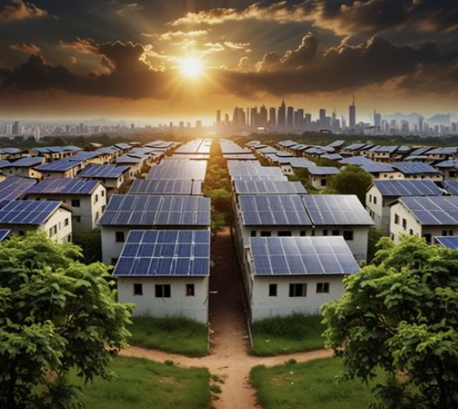
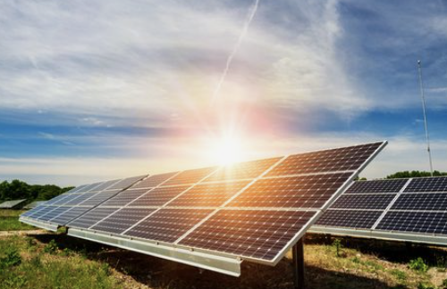
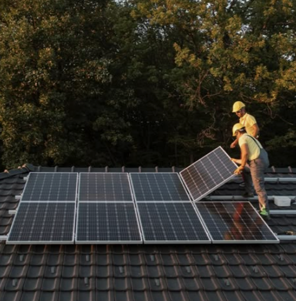
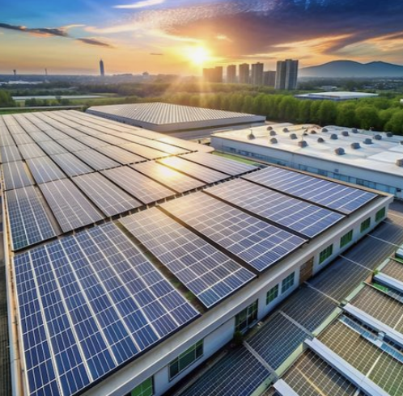
Solar energy is a renewable source of power that is harnessed from the sun’s radiation. It is captured using solar panels, which contain photovoltaic (PV) cells that convert sunlight into electricity. This electricity can be used immediately, stored in batteries, or fed into the power grid.
How Solar Energy Works
Sunlight Absorption – Solar panels absorb sunlight using photovoltaic cells.
Electricity Generation – The absorbed light excites electrons, creating direct current (DC) electricity.
Conversion to Usable Power – An inverter converts DC electricity into alternating current (AC), which powers homes and businesses.
Energy Storage or Grid Use – Excess energy can be stored in batteries or sent to the electrical grid.
--- Wind Energy ---
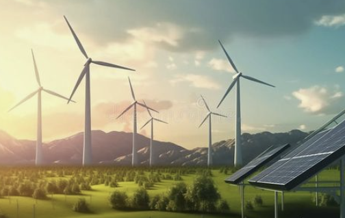
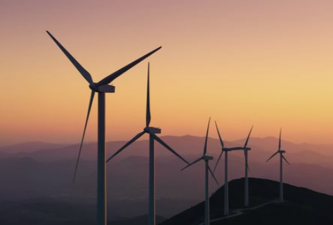
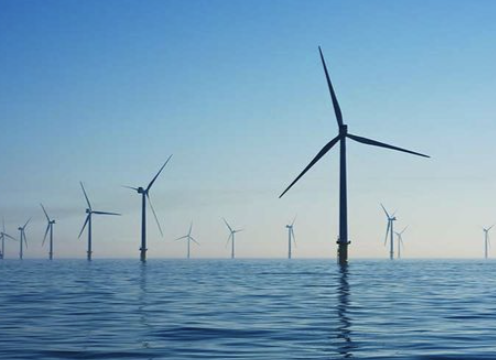
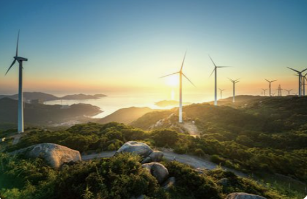
Wind energy is a renewable energy source that harnesses the power of moving air to generate electricity. It is captured using wind turbines, which convert kinetic energy from the wind into mechanical power, which is then transformed into electricity through a generator.
How Wind Energy Works
Wind Turns the Blades – As the wind blows, it moves the large blades of a wind turbine.
Rotation Generates Power – The blades are connected to a rotor, which spins a shaft inside the turbine.
Electricity Production – The shaft is connected to a generator that converts mechanical energy into electricity.
Energy Distribution – The electricity can be used directly, stored in batteries, or sent to the power grid.
--- Hydropower ---
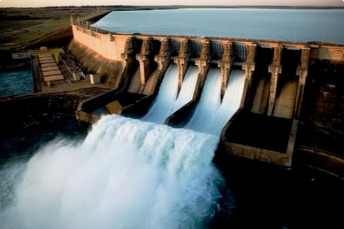
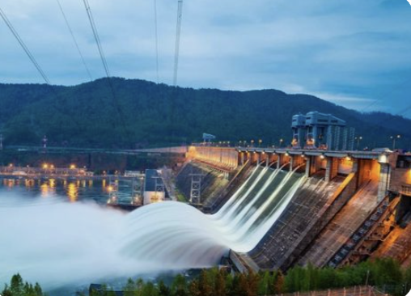
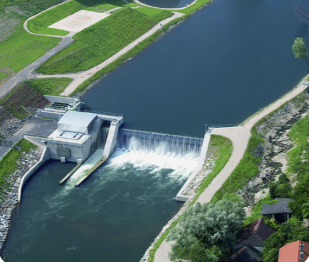
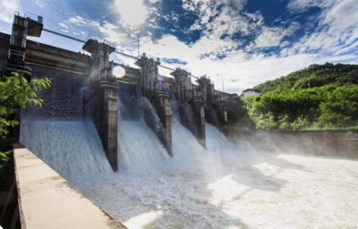
Hydropower, also known as hydroelectric power, is a renewable energy source that generates electricity by using the movement of water. It is one of the oldest and most widely used forms of renewable energy. The energy from flowing or falling water is captured and converted into mechanical energy, which is then transformed into electricity using a generator.
How Hydropower Works
Water Flow is Controlled – A dam or reservoir stores water and releases it in a controlled manner.
Turbine Rotation – The flowing water turns large turbines.
Electricity Generation – The turbines are connected to generators that convert mechanical energy into electricity.
Power Distribution – The generated electricity is transmitted to homes, businesses, and industries.
--- Biomass Energy ---
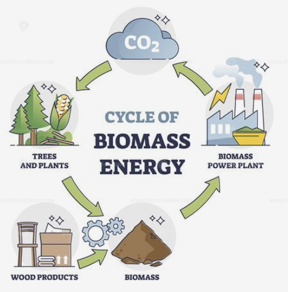
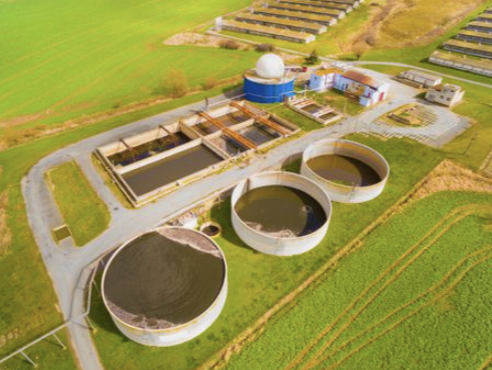
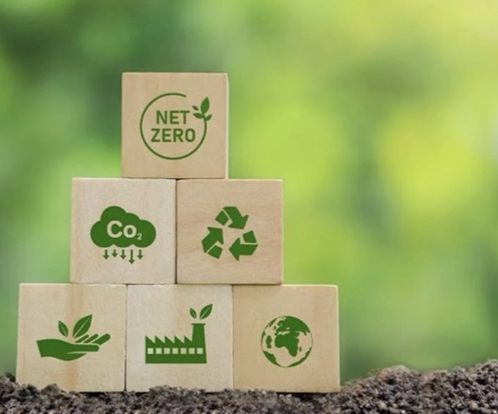
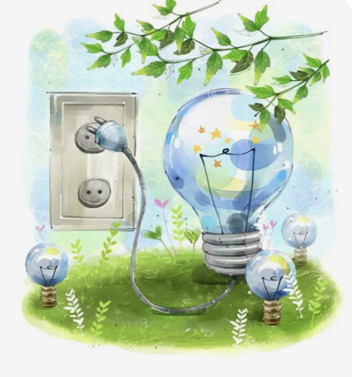
Biomass energy is a renewable energy source that comes from organic materials like plants, wood, agricultural waste, and even animal manure. It is one of the oldest sources of energy, traditionally used for heating and cooking. Modern biomass energy is converted into electricity, biofuels, or biogas to power homes, businesses, and vehicles.
How Biomass Energy Works
Collection of Biomass – Organic materials such as wood, crops, and waste are gathered.
Combustion 🔥 – Burning biomass to generate heat and electricity.
Gasification 💨 – Converting biomass into synthetic gas (syngas) for energy production.
Anaerobic Digestion 🦠 – Breaking down organic waste to produce biogas (methane).
Fermentation 🍶 – Converting plant material into biofuels like ethanol and biodiesel.
Conversion Process – Biomass is converted into usable energy through different methods.
Energy Utilization – The produced energy is used for heating, electricity generation, or fuel for transportation.
Benefits of Renewable Energy
Environmental Impact: Reduces greenhouse gas emissions and air pollution.
Sustainability: Renewable sources are inexhaustible and can meet future energy demands.
Economic Growth: Creates jobs in manufacturing, installation, and maintenance.
Energy Independence: Reduces reliance on imported fossil fuels.
Challenges & Solutions
Intermittency: Renewable energy sources like solar and wind are not always available. Solution: Develop energy storage systems like batteries.
High Initial Costs: Installation of renewable energy systems can be expensive. Solution: Government subsidies and incentives can make it more affordable.
Land Use: Large-scale renewable energy projects require significant land. Solution: Optimize land use and integrate renewable systems into existing infrastructure.
Circular Economy & Waste Reduction
A circular economy is an economic system focused on eliminating waste and continuously using resources. Unlike the traditional linear economy (which follows a "take-make-dispose" model), a circular economy is designed to reduce waste, extend product lifecycles, and promote sustainability.
Key Strategies for Minimizing Waste, Recycling, and Sustainable Consumption
Waste Reduction Strategies
Reducing Single-Use Plastics – Encouraging reusable alternatives (e.g., cloth bags, metal straws, refillable water bottles).
Eco-Friendly Product Design – Creating products that are durable, repairable, and recyclable.
Minimal Packaging – Using biodegradable, compostable, or recyclable packaging materials
Recycling & Upcycling
Efficient Recycling Systems – Governments and businesses developing better waste collection, sorting, and processing facilities.